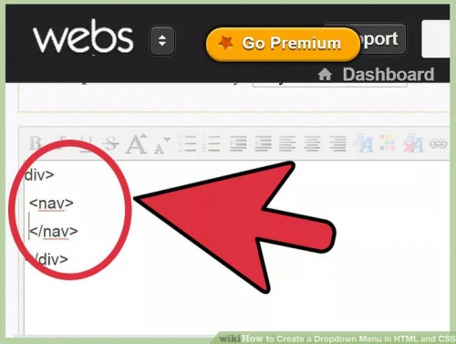
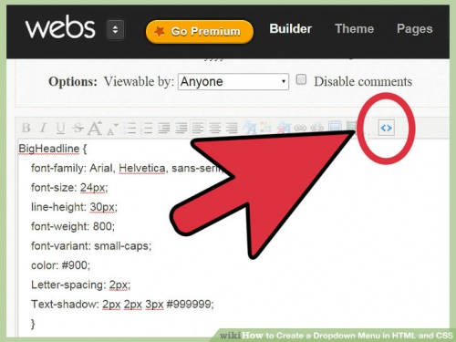

Как создать выпадающее меню с помощью HTML и CSS
5 лет назад 5.7K
Выпадающее меню позволяет создать четкое и иерархическое представление всех основных разделов. Вы можете создать выпадающее меню с HTML раскрывающимся списком, не используя ничего, кроме языка гипертекста и CSS.
Содержание
Часть 1
Составление HTML

- Создание раздела навигации. Как правило, мы используем для главной панели навигации сайта тег <nav>, <header> — для более узких разделов или <div>, если нет других вариантов. Поместите этот код в элемент <div>, чтобы можно было задать стили для всего меню:
<div>
<nav>
</nav>
</div>
- Задайте для каждого раздела название класса. Мы будем использовать атрибут класса позже, чтобы определить стиль этих элементов с помощью CSS. Задайте названия классов для контейнера и меню с раскрывающимся списком HTML:
<div class="nav-wrapper">
<nav class="nav-menu">
</nav>
</div>
- Добавьте список пунктов меню. Неупорядоченный список (<ul>) содержит пункты главного меню (<li>), на которые пользователи будут наводить курсор мыши, чтобы вывести выпадающее меню. Добавьте класс «clearfix» для элементов списка. Мы вернемся к этому позже в разделе CSS:
<div class="nav-wrapper">
<nav class="nav-menu">
<ul class="clearfix">
<li>Home</li>
<li>Contributors</li>
<li>Contact Us</li>
</ul>
</nav>
</div>
- Добавление ссылок. Теперь нужно добавить ссылки на страницы соответствующих разделов. Даже если они не содержат ссылок на что-то, добавьте ссылки на несуществующий анкор (например, «#!»), чтобы курсор пользователя менял внешний вид при наведении на них. В этом примере пункт Contact Us никуда не ведет, но остальные два пункта раскрывающегося списка HTML CSS содержат ссылки на конкретные разделы:
<div class="nav-wrapper">
<nav class="nav-menu">
<ul class="clearfix">
<li><a href="/">Home</a></li>
<li><a href="/Contributors">Contributors</a>
</li>
<li><a href="#!">Contact Us</a>
</li>
</ul>
</nav>
</div>
Демо: адаптивное выпадающее меню
- Создание списков вложенных элементов. После того, как мы установим стили, эти раскрывающиеся списки HTML станут выпадающими меню. Вложите список в элемент, на который пользователь будет наводить курсор. Задайте имя класса и ссылку, как мы делали ранее:
<div class="nav-wrapper">
<nav class="nav-menu">
<ul class="clearfix">
<li><a href="/">Home</a></li>
<li><a href="/Contributors">Contributors</a>
<ul class="sub-menu">
<li><a href="/jordan">Michael Jordan</a></li>
<li><a href="/hawking">Stephen Hawking</a></li>
</ul>
</li>
<li><a href="#!">Contact Us</a>
<ul class="sub-menu">
<li><a href="mailto:bugsupport@company.com">Report a Bug</a></li>
<li><a href="/support">Customer Support</a></li>
</ul>
</li>
</ul>
</nav>
</div>
Часть 2
Составление CSS

Создание выпадающего меню с помощью MySQL, PHP и JavaScript
- Откройте CSS. Разместите ссылку на CSS стили в разделе <head> HTML-документа, если вы еще этого не сделали. В этой статье мы не будем касаться основных свойств CSS, таких как настройка шрифта и цвет фона:
- Добавьте код clearfix. Помните класс «clearfix«, который мы добавили к списку меню? Как правило, элементы HTML раскрывающегося списка имеют прозрачный фон и могут раздвигать другие элементы. Несложная настройка CSS поможет исправить эту проблему. Вот простое и красивое решение, хотя оно не поддерживается в Internet Explorer 7 и более ранних версиях:
.clearfix:after {
content: "";
display: table;
}
- Создание базовой структуры. Представленный ниже код задает размещение меню вдоль верхней части страницы и скрывает выпадающие элементы. Это только каркас общей структуры, который позволяет сосредоточиться на других элементах раскрывающегося свертывающегося списка HTML. Вы можете позже расширить его дополнительными свойствами CSS, такими как отступы и интервалы:
Создание простого адаптивного меню навигации с помощью CSS
.nav-wrapper {
width:100%;
background: #999;
}
.nav-menu {
position:relative;
display:inline-block;
}
.nav-menu li {
display: inline;
list-style-type: none;
}
.sub-menu {
position:absolute;
display:none;
background: #ccc;
}
- Задаем вывод выпадающих элементов при наведении курсора мыши. Элементы в выпадающем списке по умолчанию скрыты. Вот как реализуется вывод вложенного списка при наведении курсора мыши на родительский элемент:
.nav-menu ul li:hover > ul {
display:inline-block;
}
Если пункты древовидного раскрывающегося списка HTML меню ведут к дополнительным подчиненным выпадающим меню, то любые свойства, добавляемые здесь, будут влиять на них. Если вы хотите задать стиль только для выпадающих меню первого уровня, используйте вместо этого «.nav-menu > ul«:
- Маркирование выпадающих меню стрелками. Веб-дизайнеры, как правило, показывают, что элемент содержит вложенное выпадающее меню, с помощью стрелки вниз. Следующий код добавляет стрелку к каждому элементу меню:
.nav-menu > ul > li:after {
content: "25BC"; /*escaped unicode for the down arrow*/
font-size: .5em;
display: inline;
position: relative;
}
Изменить положение стрелки можно с помощью свойств up, bottom, right или left.
Если не все пункты раскрывающегося списка HTML содержат вложенные выпадающие меню, не задавайте стиль для всего класса nav-menu. Вместо этого добавьте еще один класс (например, dropdown) для каждого элемента li, к которому нужно добавить стрелку. Укажите этот класс, а не приведенный в коде выше:
- Настройка отступов, фона и других свойств. Теперь наше меню является функциональным, но мы можем несколько улучшить его внешний вид с помощью редактирования кода CSS.
Подсказки
- Если вы хотите добавить выпадающее меню в форму, HTML 5 позволяет легко сделать это с помощью элемента ;
- Ссылка <a href="#"> прокручивает страницу вверх, в то время как ссылка на несуществующий анкор, такая как <a href="#!">, не будет прокручивать страницу. Если это кажется вам не слишком аккуратным, то можно изменить внешний вид курсора с помощью CSS.